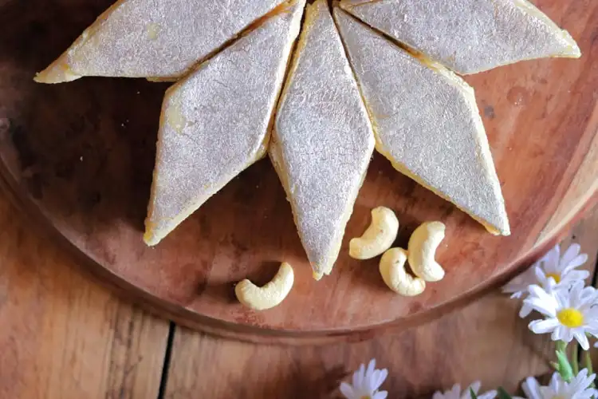

Dosa

Dosa - a thin and crispy crepe made from rice and urad dal (black lentils), served with Coconut Chutney and Vegetable Sambar is a match made in heaven! This popular breakfast item is not only healthy but also easy to prepare. There are many varieties of Dosa, e.g. Mysore Masala Dosa, Set Dosa, Ragi Dosa, Wheat Flour Dosa, Paper Dosa, etc. This simple Dosa Recipe explains how to make Plain or Paper Dosa from scratch with step by step photos and also provides tips on preventing them from sticking to the pan while cooking.
Paratha

Paratha is one of the most loved North Indian delicacies, which is prepared in almost every Indian household. If you too are a fan of parathas, then you can try making one at home and surprise your loved ones with your smart culinary skills. If you are searching for the best recipe for how to make aloo paratha, look no further! This easy Punjabi style chatpata aalu ka paratha recipe will help you make delicious, flavorful, and perfect parathas at home in a jiffy! Aloo Paratha is North India's favorite breakfast.
Kaju-Katli

A popular Indian sweet dessert recipe made with powdered cashew and sugar syrup. It is perhaps one of the popular Indian sweet recipes which are made for all celebrations, occasions, and festival seasons. It is a simple and easy sweet snack recipe made with only 2 ingredients but can be tricky with the sugar syrup consistency which may actually spoil the texture.